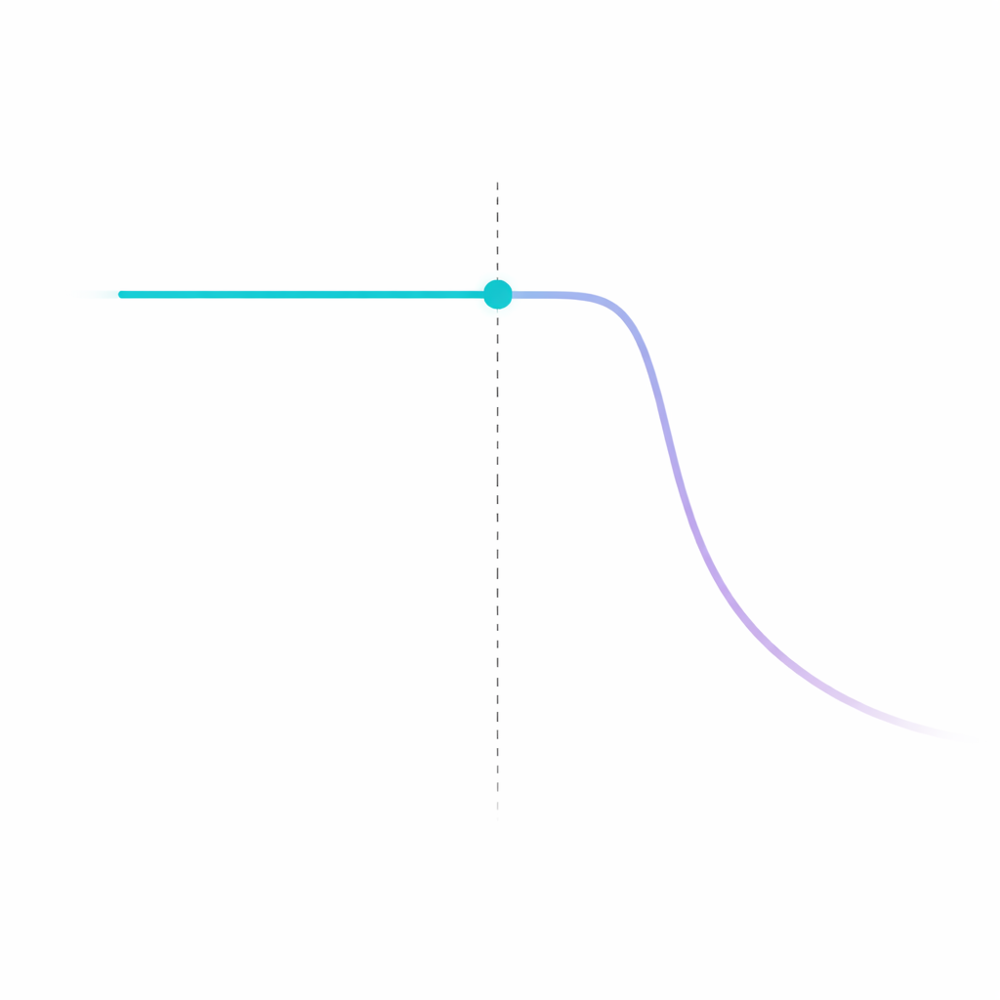

ENSEMBLE · CLINICAL TRIALS
Clinical trial attrition is not random. The behavioral profile of a patient who will disengage at week 8 is detectable before the first screening visit. Ensemble reads it.
Request Early AccessIdentifiable from behavioral profile before randomization.

Detectable at baseline. Flagged before the window closes.
Predicted before it is observable. Intervened before it is irreversible.
Population contamination risk surfaced before the data is dirty.
THE PROBLEM
Patients likely to respond to placebo are identifiable from their behavioral profile before randomization. Ensemble surfaces this segment pre-enrollment, enabling eligibility criteria and sample size adjustments before protocol lock.
For CNS trials, this is the failure that contaminates the most expensive datasets.
Patients who will disengage before the rerandomization window carry a detectable signal at baseline. Ensemble flags them at enrollment, assigns proactive retention protocols, and monitors risk in real time.
Before the window closes, not after the patient has already disengaged.
Disengagement from complex regimens becomes visible to investigators too late for meaningful intervention. Ensemble predicts it from psychosocial and behavioral conditioning before it is observable.
Enabling site-level action at the point where it can still change the outcome.
Symptom exaggeration and undisclosed treatment history at enrollment are not reliably caught by structured intake. Ensemble models the psychosocial signals that correlate with screening inflation.
Population contamination risk surfaced before randomization, not after the data is dirty.
ENSEMBLE PLATFORM
Each prediction is calibrated to your specific protocol design and patient population, not generic literature averages.
INTERVENTION RECOMMENDATIONS
DEPLOYMENT
Before enrollment begins, predict which patient segments are most likely to adhere to your specific protocol. Segment-level retention curves identify where recruitment effort translates to completers. Adjust messaging strategy, channel allocation, and site targeting before screening begins.
Fewer replacement patients. Lower screen failure rates.
Given your protocol and target population, predict who drops out, when, and why. Model visit burden trade-offs against segment-level tolerance before protocol lock. Output: a retention forecast by patient segment with dropout risk concentrated by timepoint and behavioral driver.
Redesign the protocol around patients who will actually complete it.
Real-time dropout risk scoring for enrolled patients. Reads existing trial system signals such as ePRO completion rates, visit attendance, and scheduling changes. Surfaces patients at elevated risk and specifies intervention type, channel, and timing, as an intelligence layer on top of existing infrastructure.
Intervention before disengagement. Not rescue after.